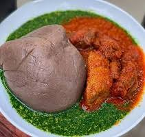

Description

Amala and Ewedu soup.
Ingredients
- Yam flour.
- Ewedu soup.
- Pepper.
- Cow meat or beef.
Steps
- Boil moderate amount of water in a pot.
- Pour the yam flour with respect to the boiled water.
- Stir or turn with spatular(omorogun) till it sticky together.
- Pour little amount of water to make it steam a bit.
- Then stir it more again till it becomes smooth and satisfactory.
- A well prepared Ewedu soup or Gbegiri.
- Soup or stew comprising various meats and beef.